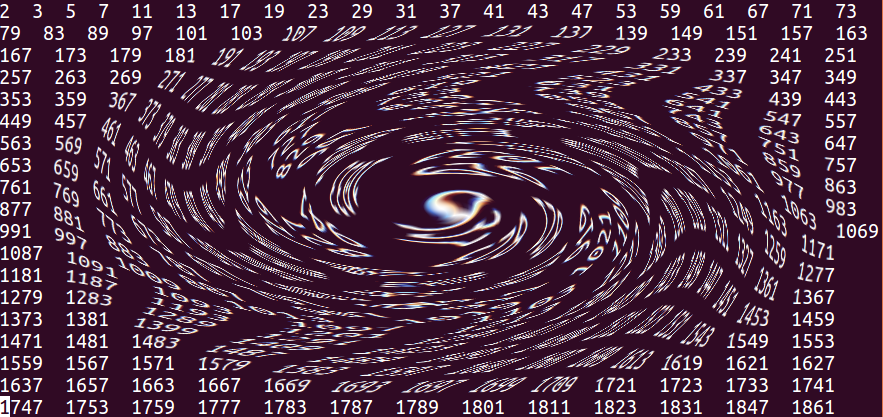
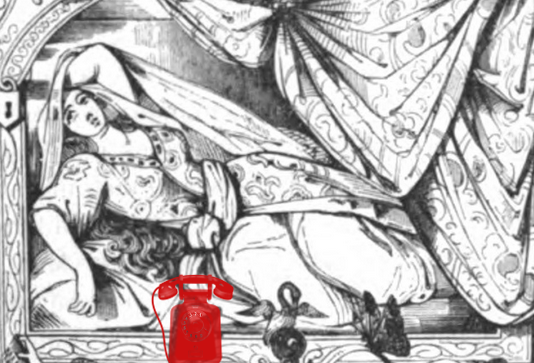

672: '672夜のメルヘン、南極から電話'事件¶
依頼人¶
高校生の息子を持つ母親。自称秘書の元同僚。今回はめずらしく、自称秘書と三人で閑談。
{kind=link}
依頼内容¶
高校受験の少しまえくらいから、息子が試験の点や、試験ごとのクラス内での順位に奇妙な関心を見せはじめた。前々回、前回、今回の得点や順位の数字を壁に並べてみて、その並んだ数字に何かしらの意味があるかのように言うのだった。
あるいは、また、からだに感じるような地震の起きた日時をひかえて、そこに規則性なり何かの啓示が隠されているかのように、数を足してみたり、差をとってみたり、といったことを暇さえあれば飽きずにやっている。
勉強や部活の妨げになるほど夢中になっているというわけではないのだが、ずいぶん長くこのおかしな興味が続いているので、親としては気になりだした。学校の担任にも相談したが、クラスでは特に変わったこともないので様子を見てはどうかと言われた。
こんなふうな、数へのすこし度をこした興味について何か分かれば教えて欲しい。
調査報告¶
数は無限にあるのに、人が自身の人生で出会う数は限られている。その一つ一つの数との出会いに、ふと、何かしら意味を探りたくなるという経験は、おそらく誰にでもあるだろう。
ただし、数へのオブセッションとファシネーションとでは、話がだいぶちがってくる。オブセッションは、特定の数、あるいは数の出現パターンにとりつかれた、強迫神経症になりかねない状態をいう。ファシネーションの方は数学、天文学、占星術等々、特定の科学や趣味の世界にはまっていく状態をいう。
しかし、なぜ数はこれほど人を魅了するのだろうか。
世おのずから数というもの有りや。有りといえば有るが如く、無しと為せば無きにも似たり。
(中略)
仮令数ありとするも、測り難きは数なり。
(中略)
数を言う者は数を知らずして、数を言わざる者或は能く数を知らん。
幸田露伴「運命」
ここで露伴のいう「数」とは術数学的な「数」のことであり、ほぼ「運命」のことである。俗にいう「運命」とちがっているのは、そこに「理」のはたらきが感じられるところにある。
科学的にものごとを考えることを学んだ頭脳は、おそかれはやかれ、「世の中にランダムな事象などというのは本当にあるのだろうか」という疑問にぶつかるだろう。しかし、これはこれでオブセッションの入り口ともなる。人が偶然に賭けるのは、ランダムと見える数の現れ方のどこかに必然が潜んでいることを信じる(信じたい)からである。日常に現れる、なんということのない数に気がとまってしまうのは、このような人間の思考のあり方による。
早熟の天才、ホーフマンスタールの短編に「第672夜のメルヘン」というのがある。このごく短いが謎めいた作品はさまざまな角度から論じられてきた。題名が千夜一夜物語との関係を示しているので、その角度からの論考も多い。
「第672夜のメルヘン」が雑誌に掲載されたのは1895年であり、この時点までヨーロッパで広く読まれていた千夜一夜物語は18世紀のGalland訳に基づくものだった。Gallandが材をとったのは、現在その原典が失われた部分を入れても第371夜までにすぎず、そこに出典不明なアラジンと魔法のランプ、アリババと40人の盗賊などを足したものを千夜一夜物語としたのだった [Burton] 。その後も何人かのアラビア語学者による追加を経た後、それらの夜をすべて数えてみても、第568夜までしかなかった [Habicht] 。ホーフマンスタールが少年期から親しんでいて、頭にあったのは、これらの一般に流布した千夜一夜物語のどれかだったと思われる。第672という数は千夜一夜物語との関連が明らかな程度に大きく、かつ、一般の千夜一夜物語には収録されていない夜という点で、選ばれたのかもしれない 1 。
物語は、「主人公がある日突然旅に出て、そこから帰れなくなる『冥界への旅』を一連の象徴的な図式で表現している。」 [Brion] 。細部にわたる象徴の解釈は多くの論考にゆずり、以下、無味乾燥になってしまうが、梗概を記す。
主人公「商人の息子」が24歳になった後に始まる。
物語はおおむね次のようなステップで進行する。
1. 主人公は父から大きな遺産を受け継いだ。24歳で彼は社会生活に倦んでしまった。
友人も恋人も必要とせず、わずか4人の召使に囲まれて、孤独だが充実した日々を送っていた。
4人の召使は、「老婢」、ペルシャ大使館に以前つとめていた「老僕」、
若くて美しいが寂しげな「小間使い」、そして、主人公に反撥する「老婢の遠縁の少女」である。
主人公はつねに4人の眼差しにかこまれており、ときに息苦しさを覚える。
一方、二人の老人の老いが進むのを目にし、いずれこの世界を保てなくなると感じている。
2. 夏、彼はいつもの4人に囲まれて別荘に日を送っていた。
ある日、主人公は、彼の老僕を誹謗する手紙を受け取る。
老人がペルシャ大使につかえていた頃のことに関するものだった。
彼はこの問題を解決するために一人で町に戻って、ペルシャ大使の話をまず聞こうと思う。
3. ペルシャ大使は留守だった。
町を歩いていて、場末の宝石点のショウウィンドウのなかの緑柱石の装飾に目が止まった。
その緑柱石になぜか老婢を思い出し、買ってやろうと思った。
4. 店主はほかにもいろいろとすすめてきた。店主の肩越しに手鏡があった。
その手鏡と彼のなかの美しい小間使いのイメージとが呼応した。
彼女の頸を金のネックレスで飾ってやりたくなった。
店主はさらに奥の部屋に主人公を導いた。その部屋で彼はすぐに手頃な金の鎖を見つけることができた。
店主が二つの品物をそれぞれ包んでいるとき、隣家の手入れされた菜園が主人公の目に映った。
5. 店主が隣家に続く門をあけてくれた。
庭園の温室で珍しい花々のあいだを散策しているうちに日が暮れかけた。
もう一つ温室があった。その温室を覗きこんだ主人公は、言葉にならない恐怖を感じた。
内側から少女が彼のことをにくにくしげに見つめていた。その顔が彼の家の少女にそっくりだった。
温室に入ると、少女は必死に彼を押しもどそうとした。無理と分かると外に出て、扉の閂をかけてしまった。
6. 彼は温室の反対側からやっと出ることができたものの、そこは狭い閉じられた通路だった。
壁の裂け目を通り、危険な思いをしながら、やっと別の建物の中に入り、階段を降りて外に出た。
7. そこは兵舎のある広場になっていて、兵士たちが馬を洗ってやっていた。
主人公はポケットから緑柱石の宝飾品を落とした。
それを拾おうとしたとき、馬にけられて昏倒してしまう。
一人きりで兵舎に寝かされた主人公は、この苦難にいたる契機となった4人の召使を恨む。
彼の怒りはこれまでの彼の生のすべてに向けられる。
後悔に似た怒りを抱え、彼はひどい形相のまま死んでしまう。
4人の召使のうち、一対の老いていく男女は、この小さな世界の基盤であると同時に不可逆な時間を表す。女(27歳ほど)と少女(15歳ほど)とは過ぎていく時間への諦めと抵抗とをそれぞれ表している。
物語のステップ1は、胎児が人の形をはっきりさせるにいたる段階(24週頃まで)を、4人の召使が媒介する2-5は胎児が熟して産道に押し出されていく誘引のひとつひとつを、ただし5は胎内にとどまりたい最後の抵抗をふくみ、6は産道を通過するときの危機を、7は外界に押し出された赤ん坊の怒りを象徴しているようにも見える。
物語のなかで児は象徴的に死に、物語のそとで人間が生まれる。物語のそとに生まれた人間は、還ることのできない世界に還るための鍵のありかを、数の不思議のなかに探ろうとする。
ここで、672という数字を 遊戯的に 導いてみる。すなわち、
24(年の歳月・胎児週数) x 4(誘引) x 7(ステップ)
= 672
そこに数字があると、こんなふうにいじくりまわしたくなるのが人間の習性である。作家はその習性を利用して、物語の迷宮に誘いこむ入り口としたりする。
ところで、少し前(2018年10月23日)のアラブ首長国連邦のニュースサイトの記事見出しである。
{kind=link}
留守電に注意: UAE居住者をねらった最新のワンギリ詐欺は南極から¶
うっかり掛け返すと高額の電話料請求がくるワンギリ詐欺が、とうとう南極からも来たというのである。ちなみに南極の国番号は 672 である。万一かかって来ないともかぎらないので、控えておくと良い。
青年は兵役を短くすませるための手段として、志願して教練を受けた。
春以来の身心不調で、家を離れた土地での教練は辛かった。
その中で新しい作品の構想はしだいに固まってきていた。
その日の乗馬をふくめた教練は特にきつかった。宿舎に戻ると戸口の前に汚れた紙切れが落ちていた。
見ると、誰が踏みつけたのか、靴あとが押されたその紙切れは、なにかの請求書らしかった。
672で始まる番号が並ぶその下に、56クローネというような文字が見えた。
彼はつま先でその紙をよけ、宿舎に入った。紙切れのことはそのまま忘れてしまった。
現在残っている日記にも母親への手紙にも、この小さな出来事への言及は見あたらない。
2021年7月16日
- 1
全1001夜分をおさめたWeilによるドイツ語訳が完成したのは1841年だが、Burtonによれば原典への忠実さという部分では、それまででは抜きん出ているものの、文章は生硬で、読んであまりおもしろくないとのことである。なお、Weil版とBurton版とでは話のならび順がずいぶん違っている。
- Burton
Richard Burton, The Book of The Thousand Nights and A Night, Printed by The Burton Club, London, 1886. この部分は第10巻'Terminal Essay'にある。
- Habicht
Schall, K., Hagen, F. Heinrich von der., Habicht, C. Maximilian. (1826). Tausend und eine nacht: Arabische erzählungen. Wien: Gedruckt und verlegt bei C.F. Schade. ここでは、https://catalog.hathitrust.org/Record/001854457 にあるミシガン大学所蔵本を参照した。Habichtは、Galland版(Caussin, Gauttier, Scottの手を経たもの)の全568夜に、Caussin de Percivalの仏訳補遺から3話と、チュニジアで見つかったという手稿から第885夜-第1001夜の計117夜を足した。第568夜と第885夜との間の夜は番号づけがされていない。
- Brion
Marcel Brion, "Hugo von Hofmannsthal: élucidation d'un conte.", Revue des deux mondes, mars 1975. https://www.revuedesdeuxmondes.fr/wp-content/uploads/2016/11/2a186345f91a84945e9696dbc94b77b5.pdf